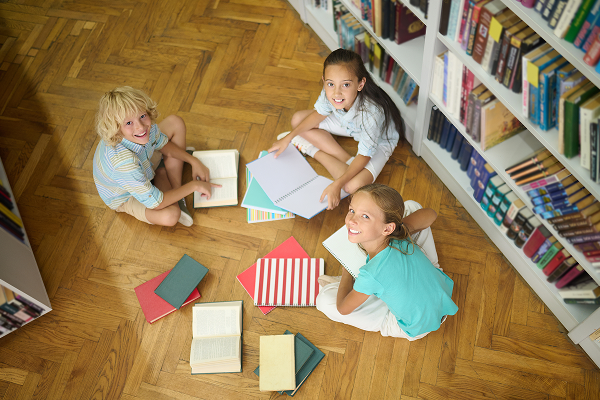
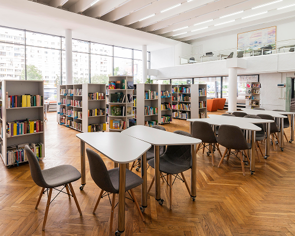
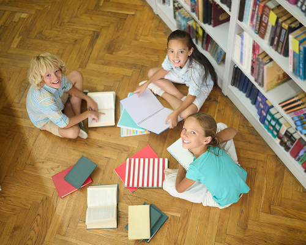
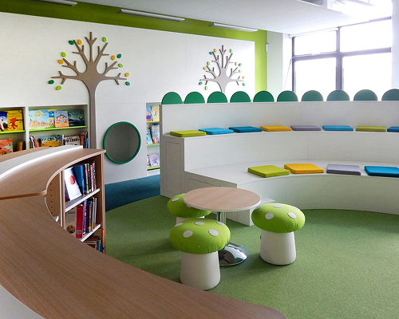
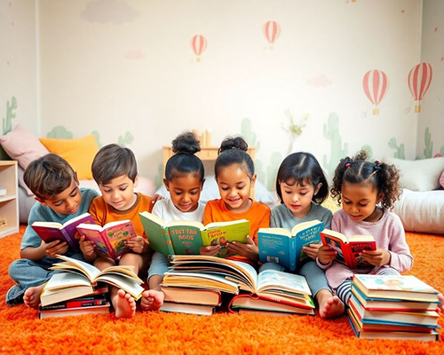
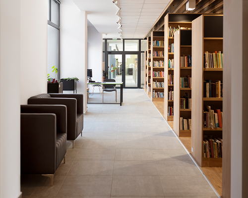
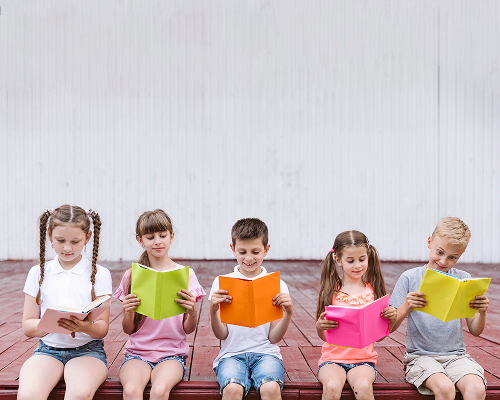
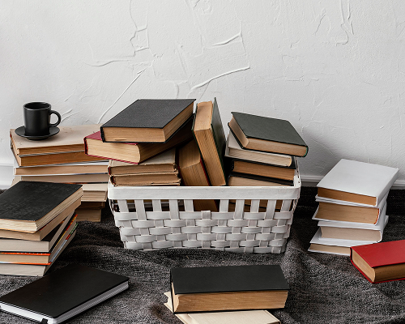
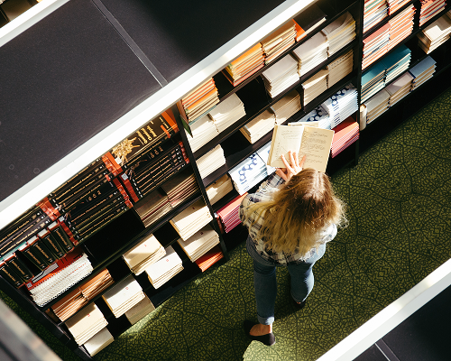

사회공헌
사회공헌
home > 사회공헌 > 교육지원
교육지원
Educational Support
교육지원
아이들의 내일을 밝히는 책 한 권의 힘, 동서식품 꿈의 도서관

-
꿈을 키워가는,
지식의 씨앗을 심는 공간
동서식품 꿈의 도서관
-
‘동서식품 꿈의 도서관’은 미래의 주역인 어린이들의 생각과 꿈을 키울 수 있도록
초등학생 어린이들에게 도서를 기증하고 쾌적한 독서 환경을 조성하는
사회공헌 활동입니다.

-
작은 공간에 담긴
끝없는 가능성
- 동서식품은 책이 가져다 주는 풍부한 지식과 배움의 행복을 어린이들과 함께 나누는 ‘꿈의 도서관’을 비롯하여 나눔의 손길이 필요한 꿈나무들을 위한 후원 활동을 지속적으로 전개해 나갈 예정입니다.

제8회 동서식품 꿈의 도서관
- 수혜처 : 대전광역시 대전봉산초등학교
- 기부내역 : 도서 3천여권 및 도서관 환경개선 (서가 교체 및 추가)
- 기념행사 : 2024년 5월 2일

제7회 동서식품 꿈의 도서관
- 수혜처 : 광주광역시 광주교육대학교 광주부설초등학교
- 기부내역 : 도서 3천여권 및 도서관 환경개선
(서가 교체 및 추가, 도서 열람공간 개선) - 기념행사 : 2023년 5월 2일

제6회 동서식품 꿈의 도서관
- 수혜처 : 대구시 서부초등학교
- 기부내역 : 도서 3천여권 및 도서관 환경개선
(서가 교체 및 추가, 저학년 열람공간 개선 등) - 기념행사 : 2022년 5월 3일

제5회 동서식품 꿈의 도서관
- 수혜처 : 인천시 동암초등학교
- 기부내역 : 도서 3천여권 및 도서관 환경개선
(추가 서가 구축, 저하년 열람공간 개선 등) - 기념행사 : 2021년 4월 14일

제4회 동서식품 꿈의 도서관
- 수혜처 : 대전시 서원초등학교
- 기부내역 : 도서 3천여권 및 도서관 환경개선
(추가 서가 구축, 저학년 열람공간 조성 등) - 기념행사 : 2020년 5월 6일

제3회 동서식품 꿈의 도서관
- 수혜처 : 창원시 명도초등학교
- 기부내역 : 도서 3천여권 및 도서관 환경개선
(모둠학습실, 저학년 열람공간 등) - 기념행사 : 2019년 5월 29일

제2회 동서식품 꿈의 도서관
- 수혜처 : 인천부평동초등학교
- 기부내역 : 도서 3천여권 및 도서관 환경개선 (서가 교체 및 추가)
- 기념행사 : 2018년 12월 11일

제1회 동서식품 꿈의 도서관
- 수혜처 : 진천군 진천상산초등학교
- 기부내역 : 도서 3천여권 및 도서관 환경개선 (서가 교체 및 추가)
- 기념행사 : 2017년 12월 14일